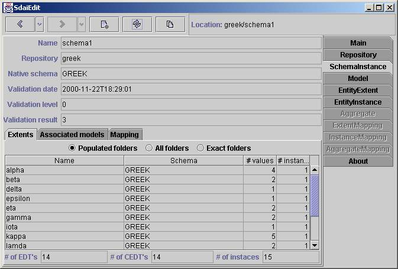
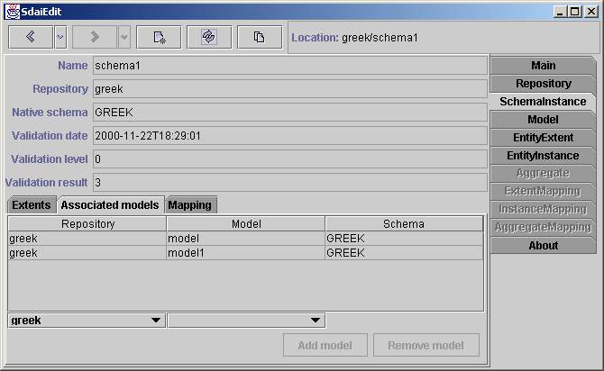
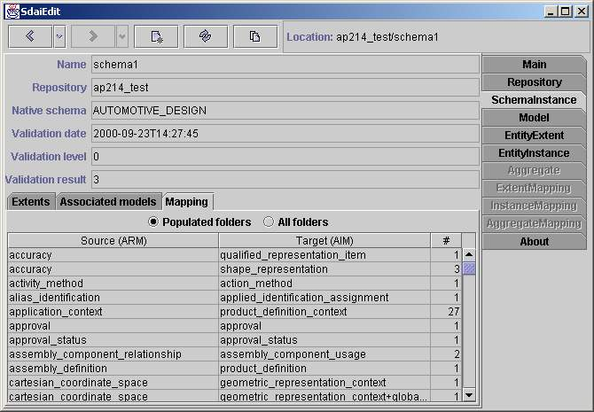

Schema Instance page
This page shows the contents of a schema instance. The name of schema instance,
repository to which it belongs to, native schema name and validation
information are given in upper part of page. There are three sub tabs: Extents,
Associated model and Mapping. The Extents and Mapping tabs are the same as
in model page, but data are taken from all associated
models of this schema instance.
Extents

The contents of all associated models together are shown here. At the top
is filtering line where you can filter the table below. 'Populated' will
showall the all entity data types which have more than zero entity data type
values(column '#values'). 'All folders' will show all entity data types.
And 'Exactfolders' filter just these entity data types which have an instance
(column '#instances').
Table
Table have four columns: Name, Schema, # values and # instances. Name column
contains names of entity data types (name of entity definition ). Schema
columncontains schema name of of entity data type. # values column shows
haw muchentity data type values are for this entity data type and # instances
showshow mush instances have this entity data type. If there is an empty
cell insteadof number in '# values' column this means that such entity data
type valuecan not exist (entity data type is complex). If there is an empty
cell insteadof number in '# instances' column this means that such instance
can not exist(entity data type is abstract). At the end the total number
of entity data types, complex entity data typesand instances are shown.
Associated models

All associated models for this schema instance are listed here.
Table
Table consists of three columns: Repository, Model and Schema. In 'Repository'
column are listed repositories for which models belongs to. In 'Model' column
are listed models name. In 'Schema' column - native schema name of model.
Editing line
There are two combo boxes associated with table columns above. In first one
you need to select preferred repository. Than in second combo box all models
of this repository will appear. Models which already are in this schema instance
are marked with '*' symbol. After you choose one of them and press 'Addmodel'
button model will be added to this schema instance. If you want toremove
model, you need to select it and press 'Remove model' button.
Mapping

Here are listed all AIM data in ARM context (All ARM entity data types).
Ifthere is no ARM schema for this underlying schema, than 'No mapping data'
will appear instead of table. At the top are two filtering radio buttons.
First one 'Populated folders' will list these ARM entity data types which
haveany available AIM instance. And second one 'All folders' lists all available
ARM entity data types.
Table
Table consists of three columns: 'Source (ARM)', 'Target (AIM)' and '#'.
Infirst column are presented ARM entity data type names. In second are AIM
entitydata type names. It is need to remember that one ARM entity data types
canbe mapped to several AIM entity data types. So there is relation many
to many.Third column show count of instances which is available for this
pair ARM andAIM entity data types.